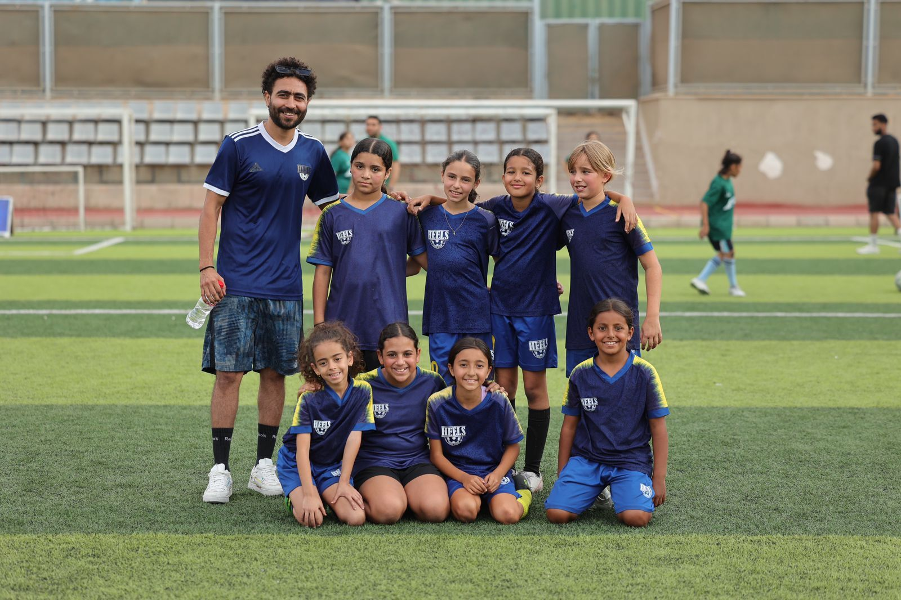
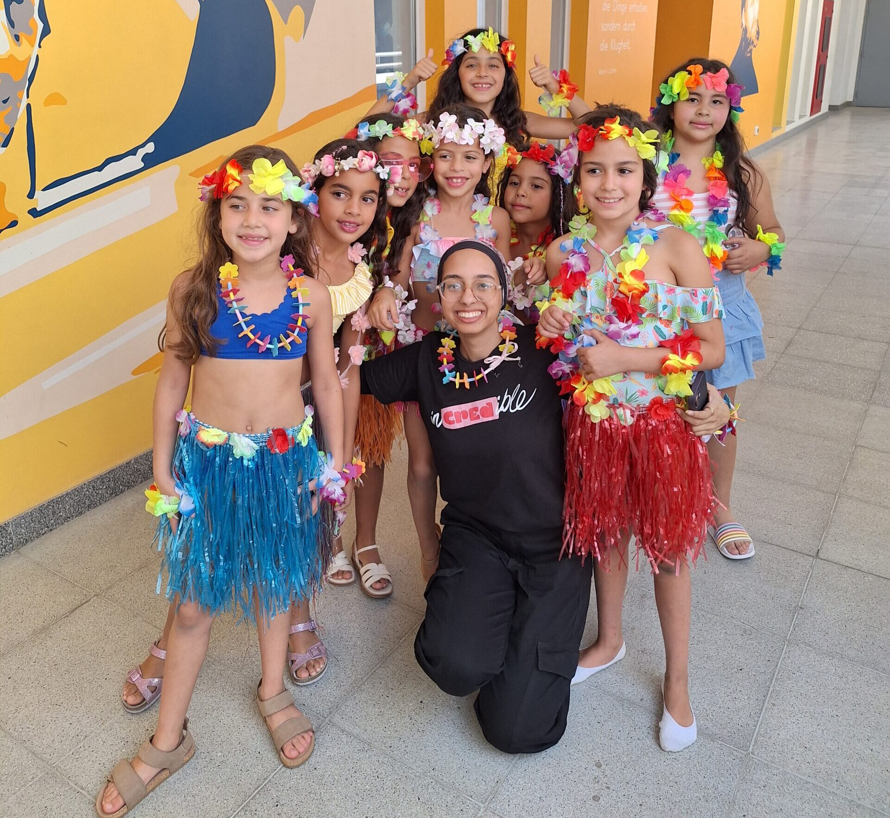

01 — The beginning
1873A few rooms, and a decision.
A German school opens in Cairo — and decides, from the start, that it will teach Cairo's children too. Everything on this page follows from that one sentence.

School Path · DEO Kairo
Not a list of dates. Scroll, and the road travels sideways through five eras — arriving out of the monochrome of the archive and into the colour of a Tuesday morning in Dokki.
01 — The beginning
1873A German school opens in Cairo — and decides, from the start, that it will teach Cairo's children too. Everything on this page follows from that one sentence.
02 — A German-Egyptian connection
1900sGerman rigour and Egyptian daily life stop being neighbours and start being colleagues. Neither is the guest of the other — that is the difference between a foreign school and an encounter school.

03 — Growing together
1970sThe school stops being a building and becomes a habit passed down. Former pupils bring their own children through the same gate, and the corridors fill with names the staff already know.

04 — DEO today
TodayGerman, Arabic and English are not three subjects on a list — they are the three languages a corridor conversation moves between without anyone noticing they have switched.
05 — The future
TomorrowIt loops. Alumni come back as parents, as teachers, as the people who decide what the next hundred and fifty years look like — which is why our mark has no end point.

Where the road goes
Two open loops that never quite close: one for where we came from, one for where our students are going. The road you just travelled is the same shape.